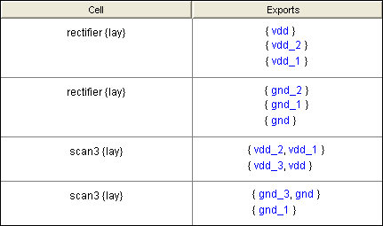

It is very common for a layout Cell, A,
to have multiple ground Wires that are connected by it's
parent Cell, B. For example,
Cell A may have a Wire with the
Export "gnd" and a different Wire
with the Export "gnd_1". When
Cell B instantiates A,
Cell B connects A's
Exports "gnd" and "gnd_1".
However, A's schematic
typically has only one combined "gnd"
Wire. When NCC compares A's
schematic and layout, it finds that the ground Wires mismatch. As a
solution, the designer adds the following NCC annotation into A's
layout cell:
exportsConnectedByParent gnd gnd_1
This annotation constitutes a promise
that whenever A is
instantiated, its Exports "gnd"
and "gnd_1" will be connected.
Then, when NCC compares A's schematic and layout, it assumes that the
promise has been kept and the comparison passes. However, when NCC
compares B's schematic and
layout, it checks to see if the designer is keeping the promise. If
the promise is not kept, and no new promise to connect Exports in the
next parent is given, then NCC reports an Export assertion error in
the "Export Assertions"
leaf node.
When an "Export Assertions" node is selected, it displays a table with two columns and one or more rows (Figure 11). Each row corresponds to a broken promise. The first column has Cell names. The second column lists Exports that the designer promised would be connected, but which remained disconnected. The Exports are organized into two or more Export lists. Each Export list is a comma-separated list of Exports enclosed in curly brackets "{ }". Exports in the same list are connected. Exports in different lists are disconnected. The designer promised that all Exports in all lists would be connected.

Figure 11: The Export
Assertions table
All exports are individually highlightable. For example, if the designer clicks on the "vdd" Export then NCC will open up a window for Cell "rectifier{lay}" and highlight the net connected to the Export "vdd".
Tip: If it the design includes multiple instances of Cell "rectifier{lay}" then the designer can find out which particular instance failed to keep the promise by typing control-U which will pop up a level in the hierarchy.